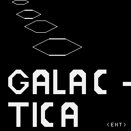

[RST20]GALACTIKA ist ein Reaktionsspiel
frei gestaltet nach dem ARKADE-
spiel CENTIPEDE.
Ihre Raumbasis auf dem Planeten
SEGURIUS ist von Zylonen entdeckt
worden. Sie muessen alle
Zylonenschiffe abschiessen,
bevor diese die Raumbasis durch
Rammen vernichten. Achten sie
auf den begrenzten Munitionsvorrat!
Je schneller alle Schiffe vernichtet
sind, desto hoeher ist
ihre Punktgutschrift.
SCHIESSEN mit Leertaste
(oder Spielhebel nach oben)
BASISBEWEGUNG mit Kursortasten
(bzw Spielhebel links/rechts)
Spielhebel oder Tastaturabfrage?(S/T)
COPYRIGHT:
W. Prengel
Vitus-Bering-Str.33/4.1
Rostock 26
2520